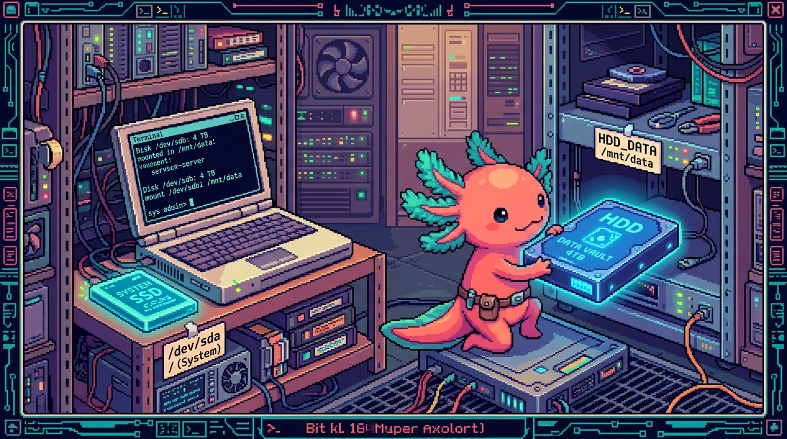

Capitulo 07 — Discos y almacenamiento

Hola de nuevo. Soy Bit, tu ajolote guia. Hoy bajamos al sotano de tu NAS: los discos. Tu servidor polypaw-nas (un laptop Acer Nitro AN515-54) tiene dos discos muy distintos, y entender quien es quien te va a salvar de muchos sustos. Vamos a aprender a ver los discos, medir cuanto espacio te queda, montar el HDD de datos en
/srv/nas, hacer que se monte solo al encender y vigilar la salud de los discos para que tus respaldos no desaparezcan un mal dia. Respira: es mas facil de lo que parece, y lo haremos con calma.
1. Los dos discos de polypaw-nas
Antes de tocar comandos, fija una idea: tu NAS no tiene un disco, tiene dos, y cumplen papeles diferentes.
- El SSD de 238 GB → es el disco de sistema. Ahi vive Ubuntu Server, los programas (Samba, Cockpit, Docker/Podman...) y la configuracion. Es rapido.
- El HDD de 954 GB → es el disco de datos. Ahi van tus archivos del recurso compartido, los respaldos de tus repos (
tunal-digital,PolyPaw,RachaSimple,Faro/Organizer), tus fotos, etc. Es mas grande pero mas lento.
🟦 ¿Que significa? — SSD (Solid State Drive)
Un disco de estado solido: guarda datos en memoria tipo "chip", sin partes que giren. Es muy rapido y silencioso. Para que sirve: arrancar el sistema y abrir programas veloz. En tu polypaw-nas: es el disco de 238 GB donde esta instalado Ubuntu Server. Como es mas pequeno, NO conviene llenarlo de archivos personales.
🟦 ¿Que significa? — HDD (Hard Disk Drive)
Un disco duro mecanico: guarda datos en platos que giran con una aguja, como un tocadiscos diminuto. Es mas lento que un SSD pero suele dar mas espacio por menos dinero. Para que sirve: almacenar muchos archivos que no necesitas abrir a maxima velocidad. En tu polypaw-nas: es el disco de 954 GB que montas en
/srv/nasy que comparte Samba.💡 Tip
Regla de oro casera: el sistema en el SSD, tus datos en el HDD. Si pones tus respaldos en el SSD, lo llenas rapido y el servidor empieza a fallar. Manten cada cosa en su lugar.
2. Como ve Linux los discos: lsblk
En Linux, todo es un archivo, y los discos tambien. Cada disco aparece con un nombre dentro de la carpeta /dev (de "devices", dispositivos).
🟦 ¿Que significa? — Dispositivo de bloque (block device)
Es como Linux llama a un disco o memoria donde se leen y escriben datos en bloques (trozos). Para que sirve: darle a cada disco un nombre con el que referirte a el. En tu polypaw-nas: tus discos aparecen como
/dev/sda,/dev/sdb,/dev/nvme0n1, etc. La "b" desdbno significa "segundo bueno", solo es el orden en que el sistema los encontro.
El comando estrella para ver tus discos es lsblk (de "list block devices", listar dispositivos de bloque):
lsblk
🟦 ¿Que significa? —
lsblkComando que dibuja un arbol de todos tus discos, sus particiones y donde estan montados. Para que sirve: ver de un vistazo "que discos tengo y como estan organizados". En tu polypaw-nas: lo usaras para distinguir el SSD del HDD y confirmar que
/srv/nasapunta al disco correcto.
Una salida tipica en tu Acer Nitro se veria parecida a esto (los nombres exactos pueden variar):
NAME MAJ:MIN RM SIZE RO TYPE MOUNTPOINTS
sda 8:0 0 954G 0 disk
└─sda1 8:1 0 954G 0 part /srv/nas
nvme0n1 259:0 0 238.5G 0 disk
├─nvme0n1p1 259:1 0 512M 0 part /boot/efi
└─nvme0n1p2 259:2 0 238G 0 part /
Leelo asi:
nvme0n1es tu SSD de 238 GB (los SSD modernos suelen llamarsenvme...). Su particionnvme0n1p2esta montada en/(la raiz del sistema).sdaes tu HDD de 954 GB. Su particionsda1esta montada en/srv/nas. ¡Ese es tu disco de datos!- La columna
SIZEes el tamano,TYPEdice si es disco (disk) o particion (part), yMOUNTPOINTSdice donde esta "enganchado" en el sistema.
🔎 En tu servidor
Conectate por SSH a polypaw-nas y corre
lsblk. Identifica cual linea es el SSD (238 GB, raiz/) y cual es el HDD (954 GB,/srv/nas). Si el HDD no muestra/srv/nasen MOUNTPOINTS, es que no esta montado todavia: lo arreglaremos en la seccion 6.
3. Particiones y sistemas de archivos
Un disco "crudo" recien comprado no sirve para guardar archivos directamente. Hay que hacer dos cosas: particionarlo y formatearlo.
🟦 ¿Que significa? — Particion
Es dividir un disco en zonas independientes, como separar una habitacion grande con paredes. Cada zona se trata como si fuera un disco aparte. Para que sirve: organizar el espacio (por ejemplo, una zona para el sistema y otra para datos). En tu polypaw-nas: el HDD tiene una particion grande,
sda1, que ocupa casi todo el disco y guarda tus datos del NAS.🟦 ¿Que significa? — Sistema de archivos (filesystem)
Es el idioma con el que un disco organiza los archivos: como guarda nombres, carpetas, permisos y donde esta cada cosa. Para que sirve: sin el, el disco seria un monton de bytes sin orden. En tu polypaw-nas: tanto el SSD como el HDD usan ext4, el sistema de archivos estandar de Linux.
🟦 ¿Que significa? — ext4
Es el sistema de archivos por defecto en Ubuntu. Maduro, estable y muy probado. Para que sirve: guardar tus archivos de forma segura y con permisos de usuario. En tu polypaw-nas: es el formato del HDD en
/srv/nas. Cuando vesext4en los comandos, es "el idioma" de tu disco de datos.🟦 ¿Que significa? — Formatear
Es escribir un sistema de archivos vacio en una particion, dejandola lista para usar. ¡OJO! Formatear borra todo lo que hubiera dentro. Para que sirve: preparar un disco nuevo. En tu polypaw-nas: solo lo harias una vez, al estrenar un disco. No vuelvas a formatear el HDD si ya tiene tus datos.
Para ver el tipo de sistema de archivos de cada particion, usa lsblk con la opcion -f:
lsblk -f
Veras una columna FSTYPE con ext4 en tus particiones de datos y sistema, y un valor UUID larguisimo que sera clave en la seccion 6.
🟦 ¿Que significa? —
mkfs(make filesystem)Comando que crea un sistema de archivos vacio en una particion, es decir, la formatea. La version para ext4 es
mkfs.ext4. Para que sirve: dejar un disco nuevo listo para guardar datos. En tu polypaw-nas: es el comando mas peligroso del capitulo. Solo se usa una vez, cuando estrenas un disco. Si lo corres sobre el HDD que ya tiene tus respaldos, los borra sin posibilidad de recuperarlos.⚠️ Cuidado
El comando para formatear es
mkfs(make filesystem). Nunca lo corras "para probar". Si escribessudo mkfs.ext4 /dev/sda1sobre tu HDD lleno de respaldos, se borra todo en segundos y no hay deshacer. Antes de cualquier comando que mencione un/dev/sdX, respira y confirma conlsblkque es el disco correcto.
4. Cuanto espacio me queda: df -h
La pregunta mas frecuente en un NAS es: ¿cuanto espacio me queda? Para eso esta df.
🟦 ¿Que significa? —
df(disk free)Comando que muestra el espacio libre y usado de cada disco montado. Para que sirve: saber si te estas quedando sin espacio. En tu polypaw-nas: lo usaras para vigilar el HDD de
/srv/nasantes de que se llene de respaldos.
La opcion -h significa "human-readable" (legible para humanos): muestra GB y MB en vez de numeros gigantescos.
df -h
Una salida tipica en polypaw-nas:
Filesystem Size Used Avail Use% Mounted on
/dev/nvme0n1p2 234G 18G 204G 8% /
/dev/sda1 938G 120G 770G 14% /srv/nas
tmpfs 3.9G 0 3.9G 0% /dev/shm
Lee la fila de /srv/nas: tiene 938 GB de tamano, 120 GB usados, 770 GB libres y un 14% de uso. Eso es lo que te importa para tus datos.
💡 Tip
Si solo quieres ver el disco de datos, pasa la ruta directamente:
bash df -h /srv/nasAsi evitas el ruido detmpfsy otras lineas de sistema.🟦 ¿Que significa? — Punto de montaje (mountpoint)
Es la carpeta donde "aparece" el contenido de un disco. Para que sirve: acceder a un disco como si fuera una carpeta normal. En tu polypaw-nas:
/srv/nases el punto de montaje del HDD. Cuando entras a/srv/nas, en realidad estas dentro del disco de 954 GB.
¿Y para saber que carpeta esta ocupando mas? Usa du (disk usage):
sudo du -h --max-depth=1 /srv/nas | sort -h
Esto te dice cuanto pesa cada subcarpeta de /srv/nas, ordenado de menor a mayor. Util para descubrir que respaldo crecio de mas.
🟦 ¿Que significa? —
du(disk usage)Comando que mide cuanto pesa cada carpeta, sumando todos los archivos que tiene dentro. Para que sirve: mientras
dfte dice cuanto queda en el disco entero,dute dice quien se esta comiendo el espacio. En tu polypaw-nas: lo usas dentro de/srv/naspara cazar la carpeta o el respaldo gigante que llena el HDD de 954 GB. El--max-depth=1evita que liste cada archivo suelto y solo te muestre el peso de las carpetas de primer nivel.🔎 En tu servidor
Cada cierto tiempo corre
df -h /srv/nas. Si elUse%pasa del 80%, empieza a planear: borra respaldos viejos o consigue mas disco. Un NAS lleno al 100% deja de funcionar bien, y Samba puede empezar a rechazar escrituras.
5. Montar y desmontar a mano
"Montar" un disco es engancharlo a una carpeta para poder usarlo. "Desmontar" es soltarlo de forma segura.
🟦 ¿Que significa? — Montar (mount)
Es conectar un disco a una carpeta del sistema para acceder a sus archivos. Para que sirve: sin montarlo, el disco existe pero no puedes entrar a el. En tu polypaw-nas: montar el HDD en
/srv/nases lo que hace que Samba pueda compartir tus datos.🟦 ¿Que significa? — Desmontar (umount)
Es soltar el disco de forma ordenada, asegurando que todo lo que estaba a medio escribir se guarde. Para que sirve: evitar corromper datos al apagar o desconectar. En tu polypaw-nas: rara vez lo haras, pero es importante saber que existe.
Montar el HDD a mano (ejemplo):
sudo mount /dev/sda1 /srv/nas
Esto dice: "engancha la particion sda1 a la carpeta /srv/nas". Despues, df -h /srv/nas deberia mostrarte el disco de 938 GB.
Desmontar:
sudo umount /srv/nas
(Si, se escribe umount, sin la "n" — es una rareza historica de Unix.)
⚠️ Cuidado
No desmontes
/srv/nasmientras alguien copia archivos por Samba o un contenedor de Docker lo esta usando. Si lo intentas, veras "target is busy" (objetivo ocupado). Avisa, espera a que nadie lo use, y entonces desmonta. Para ver quien lo esta usando:sudo lsof /srv/nas.
El problema de montar a mano es que se olvida al reiniciar. Si apagas y enciendes polypaw-nas (o se va la luz), el HDD vuelve a quedar sin montar. Para eso existe /etc/fstab.
💡 Tip
Tu Acer Nitro tiene una ventaja secreta: la bateria del laptop funciona como una UPS natural. Si se va la luz, el NAS sigue encendido con la bateria, dandote tiempo de apagarlo bien o de que vuelva la corriente. Aun asi, configurar
/etc/fstabpara que el disco se monte solo es imprescindible.🟦 ¿Que significa? — UPS (Uninterruptible Power Supply)
Una bateria de respaldo que mantiene un equipo encendido cuando se corta la luz. Para que sirve: evitar apagones bruscos que corrompen discos. En tu polypaw-nas: no necesitas comprar una; la bateria interna del Acer Nitro ya cumple ese papel mientras este sana.
6. Montar al arranque: /etc/fstab
Aqui esta el corazon del capitulo. /etc/fstab es un archivo de texto que le dice a Ubuntu que discos montar automaticamente al encender y donde.
🟦 ¿Que significa? —
/etc/fstab(file systems table)Es la lista de discos que se montan solos al arrancar. Para que sirve: que
/srv/nasaparezca montado siempre, sin que tengas que escribirmountcada vez. En tu polypaw-nas: garantiza que despues de un reinicio, Samba siga compartiendo tus datos sin que muevas un dedo.
Para que fstab identifique el disco de forma segura, NO usamos /dev/sda1 (ese nombre puede cambiar si conectas otro disco USB). Usamos el UUID.
🟦 ¿Que significa? — UUID (identificador unico universal)
Es un codigo unico que identifica una particion para siempre, aunque cambie de nombre o de puerto. Algo como
a1b2c3d4-.... Para que sirve: quefstabsiempre encuentre el disco correcto. En tu polypaw-nas: usar el UUID del HDD evita que un dia montes el disco equivocado en/srv/nas.
Primero, averigua el UUID de tu HDD:
sudo blkid /dev/sda1
🟦 ¿Que significa? —
blkidComando que lee la etiqueta de identidad de una particion: su UUID y su tipo de sistema de archivos. Para que sirve: conseguir el UUID exacto que necesitas para
/etc/fstab. En tu polypaw-nas: lo corres sobre/dev/sda1(tu HDD de 954 GB) para copiar su UUID y pegarlo enfstab, de modo que/srv/nasse monte siempre en el disco correcto aunque cambie de nombre.
Te dara algo como:
/dev/sda1: UUID="a1b2c3d4-e5f6-7890-abcd-ef1234567890" TYPE="ext4"
Copia ese UUID. Ahora edita /etc/fstab (usa nano, un editor sencillo):
sudo nano /etc/fstab
Anade una linea al final (cambia el UUID por el tuyo real):
UUID=a1b2c3d4-e5f6-7890-abcd-ef1234567890 /srv/nas ext4 defaults,nofail 0 2
Que significa cada campo, de izquierda a derecha:
- UUID=... → que disco montar.
- /srv/nas → donde montarlo.
- ext4 → el tipo de sistema de archivos.
- defaults,nofail → opciones.
defaultsson ajustes normales;nofailes clave: si el disco falta, el servidor arranca igual en vez de quedarse colgado. - 0 → respaldo con la herramienta
dump(casi nadie la usa hoy; deja 0). - 2 → orden de revision al arrancar (1 para la raiz, 2 para los demas).
🟦 ¿Que significa? —
nofailOpcion que le dice a Ubuntu: "si este disco no esta, arranca de todas formas". Para que sirve: evitar que polypaw-nas se quede atascado en pantalla negra si el HDD falla o se desconecta. En tu polypaw-nas: ponla SIEMPRE en discos de datos. Sin ella, un disco con problemas puede dejarte el servidor inaccesible.
Antes de reiniciar, prueba que fstab no tiene errores:
sudo mount -a
Esto monta todo lo de fstab. Si no da ningun error y df -h /srv/nas muestra tu disco, ¡quedo perfecto!
⚠️ Cuidado
Un error en
/etc/fstab(un UUID mal copiado, sinnofail) puede impedir que el servidor arranque. Siempre corresudo mount -adespues de editar. Si no da errores, reiniciar es seguro. Esta es de las pocas cosas que pueden dejarte el NAS sin arrancar, asi que tomatelo en serio.🔎 En tu servidor
Tambien puedes administrar discos desde Cockpit (el panel web en el puerto 9090). En su seccion de Almacenamiento ves los discos graficamente y puedes montar/desmontar con clics. Esta bien para mirar, pero entender
fstabpor texto te da control total cuando algo se rompe.⚠️ Cuidado
Cockpit escucha en el puerto 9090, pero eso NO significa que debas abrir ese puerto en tu router. Para entrar a Cockpit desde fuera de casa, conectate primero por Tailscale y luego abre
https://polypaw-nas:9090dentro de esa red privada. Exponer el 9090 directo a internet es regalarle a cualquier atacante la puerta de administracion de todo tu NAS. Tailscale primero, siempre.
7. LVM a grandes rasgos
Quizas en lsblk veas nombres raros como ubuntu--vg-ubuntu--lv. Eso es LVM, y conviene saber que es aunque hoy no lo toques.
🟦 ¿Que significa? — LVM (Logical Volume Manager)
Es una capa flexible para manejar discos. En vez de particiones rigidas, junta el espacio en un "monton" (grupo de volumenes) del que cortas "volumenes logicos" del tamano que quieras, y puedes agrandarlos despues. Para que sirve: ampliar espacio sin reformatear, o sumar varios discos en uno solo. En tu polypaw-nas: Ubuntu Server suele instalar el sistema (el SSD) sobre LVM. Tu HDD de
/srv/naspuede estar en ext4 simple o sobre LVM, segun como lo configuraste.
La idea en una frase: LVM es como tener tabiques movibles en vez de paredes de concreto. Si un dia tu volumen de sistema se queda corto, con LVM puedes agrandarlo sin reinstalar.
💡 Tip
No necesitas dominar LVM para tener un NAS funcional. Para empezar, ext4 simple en el HDD es perfecto y mas facil de entender. Aprende LVM mas adelante, cuando quieras sumar un segundo disco de datos o redimensionar volumenes.
🟦 ¿Que significa? — Volumen logico (logical volume)
Es una "particion flexible" dentro de LVM que puedes agrandar o achicar. Para que sirve: ajustar el espacio segun lo que necesites. En tu polypaw-nas: si tu SSD de sistema usa LVM, la raiz
/es en realidad un volumen logico.
8. La salud del disco: SMART
Los discos no son eternos. Un HDD mecanico, con sus partes que giran, falla con el tiempo. La buena noticia: los discos avisan antes de morir, gracias a SMART.
🟦 ¿Que significa? — SMART (auto-diagnostico del disco)
Es un sistema dentro del disco que vigila su propia salud y registra senales de desgaste: sectores danados, temperatura, errores de lectura. Para que sirve: avisarte ANTES de que el disco muera, para que respaldes a tiempo. En tu polypaw-nas: lo consultas con la herramienta
smartctlpara vigilar la salud del HDD de 954 GB, que es el que mas trabaja.
Primero instala las herramientas (si no las tienes):
sudo apt install smartmontools
Para ver la salud de tu HDD:
sudo smartctl -H /dev/sda
La linea importante dice:
SMART overall-health self-assessment test result: PASSED
PASSED = el disco se ve sano. Si dijera FAILED, respalda todo de inmediato y cambia el disco.
Para un informe completo:
sudo smartctl -a /dev/sda
Mira sobre todo estos valores:
- Reallocated_Sector_Ct → sectores danados que el disco tuvo que "jubilar". Si crece, mala senal.
- Power_On_Hours → cuantas horas lleva encendido. Un NAS acumula muchas.
- Temperature → temperatura. En un laptop dentro de una caja cerrada puede subir; vigilala.
Tambien puedes lanzar una prueba corta:
sudo smartctl -t short /dev/sda
Espera unos minutos y luego mira el resultado con sudo smartctl -a /dev/sda.
⚠️ Cuidado
SMART avisa, pero no siempre con tiempo. La unica proteccion real contra perder datos es tener copias de respaldo en otro lugar. SMART te dice "este disco esta cansado"; tus respaldos te salvan cuando, aun asi, falla de golpe.
🔎 En tu servidor
Revisa SMART del HDD una vez al mes. Como polypaw-nas vive encendido como NAS, el HDD de datos suma horas rapido. Si ves que
Reallocated_Sector_Ctempieza a subir mes a mes, ve consiguiendo un disco nuevo sin prisa pero sin pausa.
9. Seguridad y respaldos: la parte que no se ve
Hablar de discos sin hablar de seguridad seria dejarte a medias. Tus datos en /srv/nas valen mas que el hardware.
La regla 3-2-1 de respaldos (simplificada para tu caso):
- 3 copias de lo importante.
- 2 soportes distintos (por ejemplo, el HDD del NAS + un disco USB externo).
- 1 copia fuera de casa (otro lugar fisico, o un repo en GitHub como
Faro/Organizerpara codigo).
💡 Tip
Tus repos (
tunal-digital,PolyPaw,RachaSimple,Faro/Organizer) ya viven en GitHub, asi que el codigo tiene respaldo natural. Lo que de verdad debes respaldar del NAS son los datos que solo existen ahi: fotos, documentos, bases de datos de tus contenedores Docker.
Y sobre el acceso al NAS:
⚠️ Cuidado
No abras puertos de tu router hacia internet para llegar al NAS (ni el 9090 de Cockpit, ni Samba, ni nada). Abrir puertos expone polypaw-nas a todo el mundo y a ataques automaticos. Usa Tailscale, que crea una red privada cifrada: accedes a tu NAS desde fuera como si estuvieras en casa, sin abrir un solo puerto. Es la diferencia entre dejar la puerta abierta de par en par y tener una llave secreta.
🟦 ¿Que significa? — Tailscale
Es una VPN sencilla que conecta tus dispositivos en una red privada y cifrada, sin configurar el router. Para que sirve: acceder a tu NAS de forma segura desde cualquier lugar. En tu polypaw-nas: ya esta instalado; es tu via segura para llegar a Cockpit (9090) y a Samba sin exponer nada a internet.
💡 Tip
Pon contrasenas fuertes al usuario de Samba (el recurso
PolyPawNAS) y a tu cuenta de Ubuntu. Un disco bien montado pero con clave "1234" es como una caja fuerte con la puerta entreabierta.🔎 En tu servidor
Recuerda el limite de 8 GB de RAM del Acer Nitro. Los discos en si no gastan RAM, pero copiar archivos enormes por Samba o correr muchos contenedores Docker a la vez si la consume. Vigila la memoria con
free -hmientras mueves datos grandes; si la RAM se agota, el sistema se pone lento o mata procesos. Datos y memoria van de la mano.
✅ Checklist — ¿ya domino esto?
- [ ] Se que polypaw-nas tiene dos discos: SSD de 238 GB (sistema) y HDD de 954 GB (datos en
/srv/nas). - [ ] Entiendo la diferencia entre SSD (rapido, sistema) y HDD (grande, datos).
- [ ] Se usar
lsblkpara ver mis discos y particiones como un arbol. - [ ] Se que es una particion, un sistema de archivos y que mi disco usa ext4.
- [ ] Se medir el espacio libre con
df -h /srv/nasy vigilar no pasar del 80%. - [ ] Entiendo que es montar y desmontar un disco, y por que el montaje manual se pierde al reiniciar.
- [ ] Se editar
/etc/fstabcon el UUID y la opcion nofail para montar/srv/nasal arranque. - [ ] Se que
sudo mount -apruebafstabantes de reiniciar. - [ ] Tengo una idea de que es LVM (tabiques movibles) aunque no lo use aun.
- [ ] Se consultar la salud del HDD con SMART (
smartctl -H) y quePASSEDes buena senal. - [ ] Tengo claro que respaldos + Tailscale + contrasenas fuertes protegen mis datos, y que NO debo abrir puertos a internet.
🧪 Ejercicios
-
💻 Conoce tus discos. Conectate por SSH a polypaw-nas y corre
lsblk -f. Escribe en un papel: cual es el SSD, cual el HDD, que UUID tiene la particion de/srv/nasy que sistema de archivos usa. -
💻 Mide tu espacio. Corre
df -h /srv/nasy anota el porcentaje de uso. Luego corresudo du -h --max-depth=1 /srv/nas | sort -hy descubre que carpeta ocupa mas. ¿Hay algun respaldo viejo que podrias borrar? -
💻 Revisa la salud del HDD. Instala
smartmontoolssi hace falta y corresudo smartctl -H /dev/sda. Confirma que dicePASSED. Bonus: lanzasudo smartctl -t short /dev/sda, espera 3 minutos y revisa el informe completo. -
💻 Verifica tu fstab sin reiniciar. Mira tu archivo con
cat /etc/fstaby encuentra la linea de/srv/nas. Comprueba que tienenofail. Si todo esta bien, corresudo mount -ay confirma que no da errores. -
Disena tu plan de respaldo. Sin tocar la terminal, escribe en una nota tu plan 3-2-1: ¿que datos de
/srv/nasson irreemplazables? ¿En que segundo soporte los copiarias? ¿Cual seria tu copia "fuera de casa"? -
💻 Vigila la memoria. Corre
free -hen polypaw-nas y anota cuanta RAM libre tienes de los 8 GB. Imagina que copias un archivo de 20 GB por Samba: ¿crees que la RAM seria el problema, o el disco? (Pista: el disco se llena, la RAM se usa de paso.)
Lo lograste. Ahora ves a tus discos con rayos X: sabes quien es el SSD, quien el HDD, donde se monta
/srv/nas, como hacer que se monte solo y como vigilar su salud antes de que falle. Recuerda la frase que Bit repite hasta dormido: "un dato sin respaldo es un dato que ya casi perdiste". Cuida tus discos, cuida tus copias, y polypaw-nas te servira fiel por anos. Nos vemos en el siguiente capitulo. 🐾